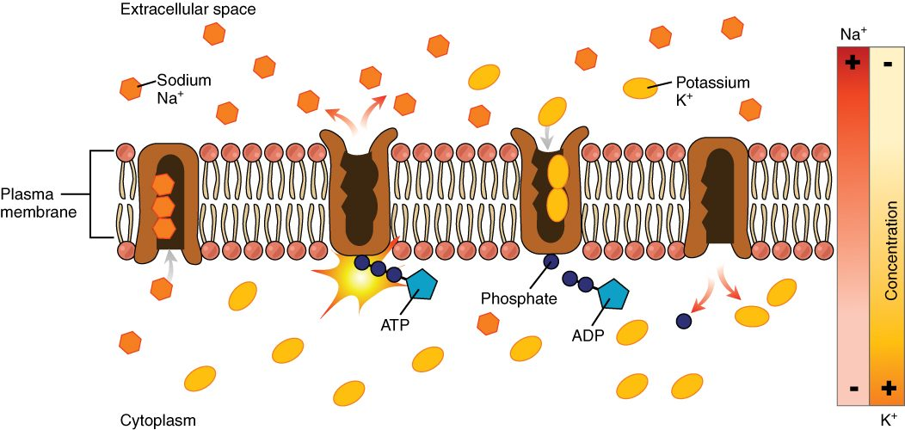
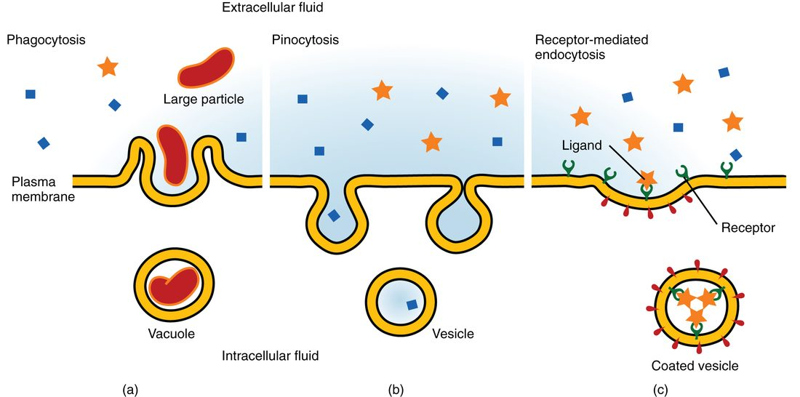
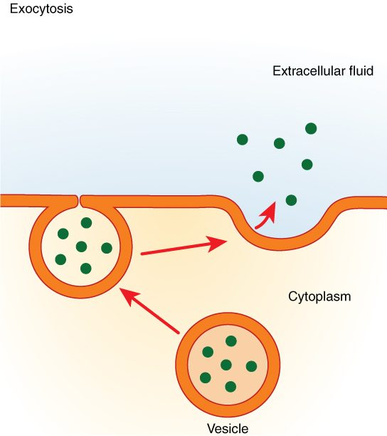

Moving substances uphill
The fluid inside your cells holds about 12 mmol/L of sodium. The fluid outside holds about 145. Sodium leaks into your cells all the time, down that steep gradient. Yet the inside stays low, year after year, because your cells keep throwing sodium back out, uphill. That takes energy. This page explains active transport: how the sodium–potassium pump spends ATP to move ions against their gradients, how other carriers borrow the sodium gradient to move glucose and calcium, and how cells move large cargo in and out in vesicles.
What active transport means
In the last topic, every substance moved down its gradient, and the gradient paid for the trip. Now reverse the direction. Moving a substance from where it is scarce to where it is crowded is like pushing a ball uphill. It never happens on its own. Something has to supply energy.
Active transport (active = acting, doing work) is movement of a substance across a membrane that requires the cell to supply energy, usually from ATP. Most active transport moves a substance against its gradient, from low concentration to high. Vesicle transport, covered at the end of this page, also counts as active because it spends ATP, even though it moves cargo in bulk rather than up a gradient.
Carrier-based active transport uses carrier proteins, so it shares their traits: each carrier is specific, and each can saturate at a transport maximum. What differs is the energy source, and there are two.
- Primary active transport uses ATP directly.
- Secondary active transport uses a gradient that primary active transport built.
| Passive transport | Active transport | |
|---|---|---|
| Direction | Down the gradient | Usually against the gradient |
| Energy source | The gradient itself | ATP, directly or through another gradient |
| Does the cell spend ATP? | No | Yes |
| Proteins involved | None (simple diffusion), channels or carriers | Pumps and carriers; vesicles for bulk cargo |
| What happens when ATP runs out | Continues | Stops, at once or as the gradients run down |
| Examples | Oxygen crossing the bilayer; glucose entering most cells; osmosis | The sodium–potassium pump; glucose uptake by intestinal lining cells; endocytosis |
Primary active transport: pumps that use ATP
Primary active transport is active transport in which the carrier itself breaks down ATP and uses the released energy to move a substance against its gradient. A carrier that does this is called a pump. Because it splits ATP, it is also an enzyme: an ATPase.
You have already met one. In the organelles topic, a lysosome's membrane keeps its interior acidic by moving hydrogen ions in. The protein that does it is a hydrogen ion pump. Other examples:
- Calcium pumps push calcium ions out of the cytosol, into the extracellular fluid and into the smooth ER. With help from other carriers, they keep free calcium in the cytosol about 10,000 times lower than outside.
- Hydrogen–potassium pumps in cells of your stomach lining pump hydrogen ions into the stomach, making stomach acid. Common drugs for acid-related stomach pain, called proton pump inhibitors, block them.
- The sodium–potassium pump, which works in nearly every cell you have, and gets the next section to itself.
The sodium–potassium pump
The sodium–potassium pump (also called the Na+/K+ ATPase, or sodium-potassium ATPase) is an integral membrane protein that moves three sodium ions out of the cell and two potassium ions into it for each ATP it splits. Both ions go against their gradients: sodium out into the sodium-rich extracellular fluid, potassium in to the potassium-rich cytoplasm (Figure 1).

One cycle of the pump runs like this:
- The pump opens toward the cytoplasm. Three sodium ions from the cytoplasm bind to it.
- Sodium binding lets the pump split one ATP. The phosphate group from the ATP stays attached to the pump. This is phosphorylation.
- The attached phosphate changes the pump's shape. It now opens toward the outside, and its hold on sodium weakens. The three sodium ions are released into the extracellular fluid.
- In this shape, the pump binds two potassium ions from the extracellular fluid.
- Potassium binding releases the phosphate group. The pump snaps back to its original shape, open toward the cytoplasm.
- Its hold on potassium weakens, and the two potassium ions are released into the cytoplasm. The pump is ready to start again.
Each pump can run this cycle many times per second, and a single cell has many thousands of pumps. Together they use a large share of your energy: roughly a fifth or more of the ATP your whole body uses at rest, and a far larger share in your brain.
Two consequences are worth knowing now:
- It moves charge. Three positive charges go out for every two that come in. Each cycle moves one net positive charge out of the cell. The next topics, on the charge difference across the membrane, show how much this matters.
- It controls cell volume. Sodium leaks in all the time. If it stayed, water would follow it by osmosis. By sending sodium back out as fast as it leaks in, the pump makes sodium behave like a solute that stays outside. When the pumps stop, sodium builds up inside, water follows, and the cell swells.
Secondary active transport: borrowing a gradient
Start with a cell lining your intestine after a meal. Glucose in the gut contents is at a lower concentration than inside the cell, yet the cell keeps taking it in, uphill. It does not split ATP to do it. Instead, a carrier in its membrane binds two sodium ions and one glucose molecule together and moves all three into the cell. Sodium rushes in down its steep electrochemical gradient, and that downhill movement drags glucose uphill with it.
That is secondary active transport: active transport in which a carrier uses the energy of one substance moving down its gradient, usually sodium, to move another substance against its gradient. The carrier splits no ATP. But the sodium gradient it spends was built by the sodium–potassium pump, which did split ATP. So the energy comes from ATP one step removed. That is why it is called "secondary".
Because two substances move together on one carrier, this is also called cotransport. There are two kinds, named by direction (Figure 2):
- Symport (sym- = together, port = carry): both substances move in the same direction. The carrier is a symporter. The sodium and glucose carrier in your intestinal lining is a symporter. Cells lining your kidney tubules use similar symporters to reclaim glucose and amino acids from forming urine.
- Antiport (anti- = against, opposite): the two substances move in opposite directions. The carrier is an antiporter, also called an exchanger. In your heart cells, a sodium–calcium antiporter lets three sodium ions in while pushing one calcium ion out. A sodium–hydrogen antiporter in most cells lets sodium in while pushing hydrogen ions out, which keeps the cytosol from becoming too acidic.
Here is the link that exam questions test. Secondary active transport depends completely on the sodium–potassium pump. Stop the pump and sodium leaks in until the inside and outside grow closer. With a smaller sodium gradient, symporters and antiporters have less energy to borrow, and they slow down.
A worked example: the pump, a drug and the heart
Worked example: why a drug that slows the pump makes the heart contract harder.
Step 1. Digoxin, a heart medicine, binds to sodium–potassium pumps in heart cells and blocks some of them.
Step 2. Fewer working pumps means sodium is pumped out more slowly than it leaks in. Sodium inside the heart cells rises a little.
Step 3. The sodium gradient across the membrane is now smaller. The sodium–calcium antiporter depends on that gradient, so it pushes calcium out more slowly.
Step 4. Calcium builds up inside the heart cells. More calcium inside makes each contraction stronger.
Conclusion: a drug that acts on primary active transport changes secondary active transport, and that changes how hard the heart contracts. Too much digoxin overloads the cells with calcium and causes dangerous heart rhythms, and blocked pumps stop returning potassium to the cells, so potassium builds up in the plasma.
Vesicle transport
Some cargo is far too big for any channel or carrier: a whole bacterium, a droplet of fluid, a load of protein made for export. Cells move these in vesicles, the small membrane spheres you met in the organelles topic. Forming, moving and fusing vesicles all use ATP, so vesicle transport is active transport. There are two directions: in (endocytosis) and out (exocytosis).
Endocytosis: bringing material in
Endocytosis (endo- = within, cyto- = cell, -osis = process) is the process in which a cell folds a patch of its plasma membrane around material outside it and pinches the patch off as a vesicle inside the cell. There are three forms (Figure 3):
- Phagocytosis (phago- = eating; "cell eating"): the cell reaches out arm-like extensions of its membrane around a large particle, such as a bacterium or a worn-out cell, and encloses it. Some white blood cells do this constantly. The vesicle then fuses with a lysosome, whose enzymes digest the contents.
- Pinocytosis (pino- = drinking; "cell drinking"): the membrane dips inward and pinches off a small pocket of extracellular fluid, with whatever solutes happen to be in it. It is not selective. Most cells do it all the time.
- Receptor-mediated endocytosis: membrane proteins on the cell surface bind one specific substance and gather in a pit coated with protein on the inside of the membrane. The pit pinches off as a coated vesicle carrying mostly that substance. This lets a cell collect a scarce substance in bulk. For example, your cells take up cholesterol this way: surface proteins that fit cholesterol-carrying particles bind them in the blood and bring them in.

When receptor-mediated endocytosis fails, the substance stays outside the cell. In familial hypercholesterolemia (hyper- = over, -emia = blood condition), an inherited defect in the surface proteins that bind cholesterol-carrying particles leaves them in the blood. Blood cholesterol is very high from childhood, and heart disease can start early.
Exocytosis: sending material out
Exocytosis (exo- = outside) is the process in which a vesicle inside the cell moves to the plasma membrane, its membrane fuses with the plasma membrane, and its contents are released outside the cell (Figure 4). It is the last step of the route you traced in the organelles topic: rough ER, Golgi, vesicle, plasma membrane.

Exocytosis does three jobs:
- Cellular secretion. Releasing a product the cell has made, such as digestive enzymes from pancreas cells or the slippery protective coating made by cells lining your airways, is called secretion. In many cells, a rise in calcium ions in the cytosol is the trigger that makes waiting vesicles fuse.
- Adding membrane proteins. The vesicle's membrane becomes part of the plasma membrane, along with any proteins in it. This is how a cell adds new channels, carriers or aquaporins to its surface.
- Removing waste. Undigested material left in lysosomes can be expelled this way.
Endocytosis and exocytosis balance each other. Exocytosis adds membrane to the cell surface; endocytosis removes it. A cell that secretes a lot also takes in a lot of membrane, and its surface area stays about the same.
Putting it together
Active transport requires the cell to supply energy, and most of it moves substances against their gradients. In primary active transport, a pump splits ATP directly. The sodium–potassium pump moves three sodium ions out and two potassium ions in per ATP, which builds the sodium gradient and controls cell volume. In secondary active transport, a symporter or antiporter spends that sodium gradient to move another substance uphill, so it stops if the pump stops. Large cargo moves in vesicles: endocytosis (phagocytosis, pinocytosis and receptor-mediated endocytosis) brings it in, and exocytosis sends it out and adds membrane to the surface.